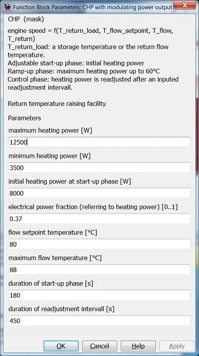

CHP with modulating power output
Path: CARNOT/???????
Purpose
This block calculates mass flow rate, outlet flow temperature, fuel and electrical power of a mini-CHP with modulating power.
Description
The engine speed of this CHP depends on the return flow temperature of the consumer circuit T_return_load,
the flow setpoint temperature T_flow_setpoint and temperatures of flow T_flow and return flow T_return of the CHP.
T_return_load can be, as circumstances require, a storage temperature or the return flow temperature.
The modulation is directly implemented on the heating power because of the linear connection between engine speed
and heating power.
During the adjustable start-up phase the CHP runs with inputed initial heating power.
Then, the CHP pass over to the ramp-up phase and runs with maximum heating power.
As soon as T_flow has reached 60°C the CHP pass over to the control phase.
During the control phase the heating power is readjusted after an inputed readjustment intervall.
The generated electrical power and fuel power are based on measured data of a modulating mini-CHP called "Ecopower"
from Vaillant with a heating power range from 3,5 to 12,5 kW.
The electrical power is calculated by an inputed fraction parameter f_P_el that refers to the heating power.
The fuel power is calculated by the factor f_P_gas multiplied with the heating power. P_gas_factor is calculated
by linear interpolation between 1.79 at minimum heating power and 1.5 at maximum heating power (f_P_gas_lookup-table).
The model enables a free scalability of the heating power. It is therefor needed to enter the desired heating power
range and initial heating power. The maximum mass flow of the pump and thermal capacity of the CHP are linearly
resized according to the relation between inputed maximum heating power and maximum heating power of the basic unit.
The model includes a return temperature raising facility. A return setpoint temperature is calculated depending on
heating power and flow setpoint temperature. The thermostatic mixer is located in the return flow of the CHP.
Thermal and electrical efficiency are calculated and summarised in a data output vector.
Inputs:
Outputs:
Parameters and Dialog Box

Characteristics
Direct Feedthrough Yes
Sample time Inherited from driving block
Vectorized No